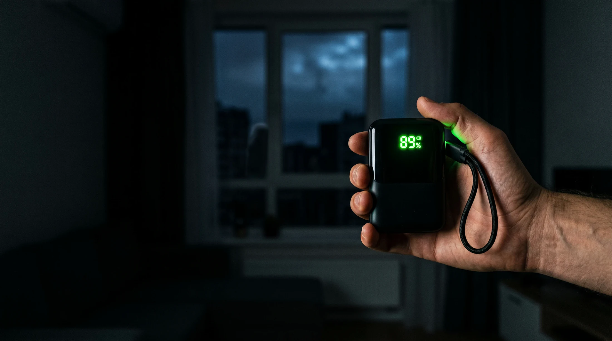
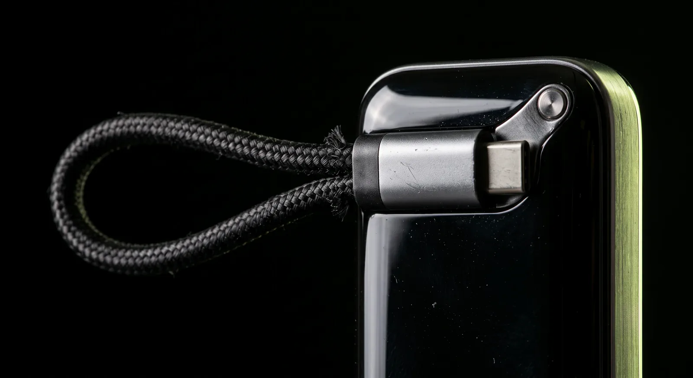
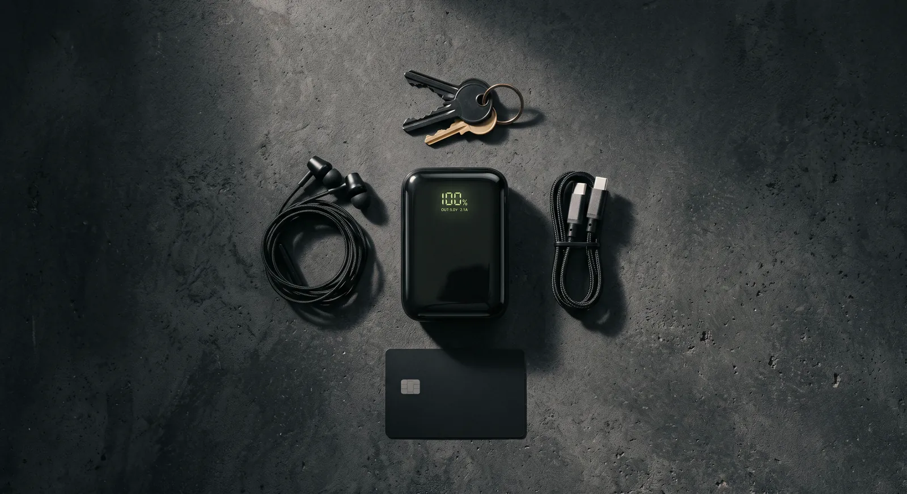
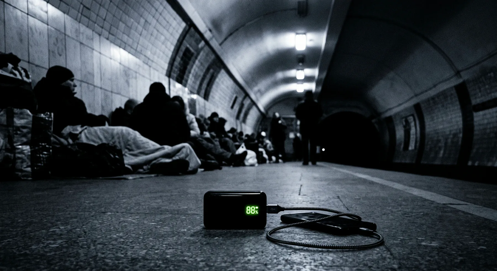
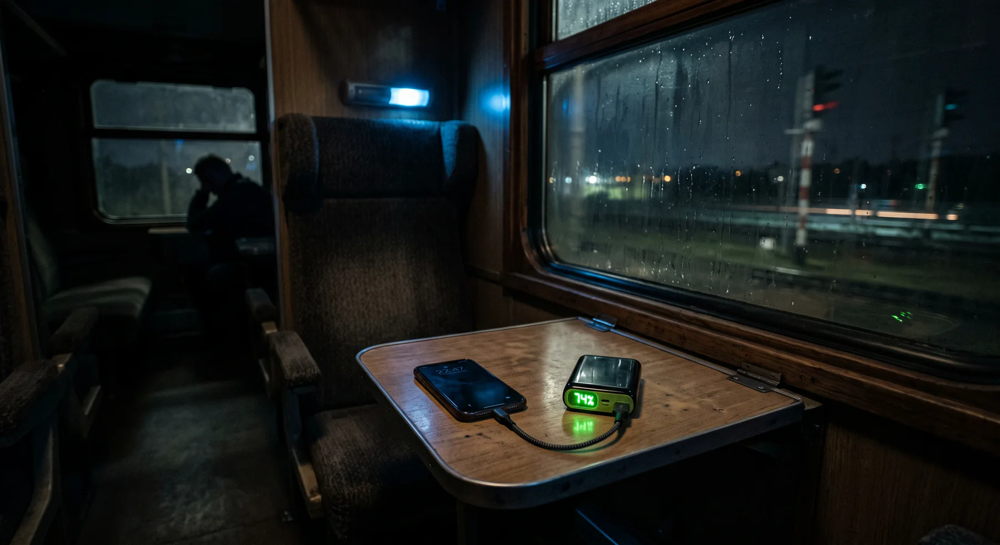

Світла немає.
Зв'язок є.
36 ват-годин у кишені, до 55 Вт на виході і три пристрої одночасно. Кабель уже всередині корпусу, тому забути його вдома фізично неможливо.
Дисплей показує не тільки
відсоток, а й реальну потужність,
з якою зараз іде струм.
Спочатку гасне світло.
Потім гасне зв'язок.
Разом із лампочкою вимикається ліфт, насос, роутер і вулична базова станція. Мобільний інтернет тримається рівно доти, доки в обладнання оператора вистачає власних акумуляторів, а далі місто стає тихим у прямому сенсі.
І все впирається
в один відсоток
Ви весь вечір бережете заряд, як останній сірник, і вимикаєте все зайве. Разом із нулем на екрані зникає ось це:
- дзвінок рідним
- мапа тривог
- Дія та банківський застосунок
- ліхтарик на сходах
Або не впирається
Двісті сорок дев'ять грамів у внутрішній кишені курточки перетворюють весь цей вечір на звичайний вечір, у якому просто немає світла.
- дзвінок рідним
- мапа тривог
- Дія та банківський застосунок
- ліхтарик на сходах
36 ват-годин.
Скільки це у ваших зарядках?
На корпусі написано 10 000 мА·год, і це чесна цифра для елементів усередині. Але у телефон приходить не вона: 3,7 вольта акумулятора перетворюються на 5 і вище на виході, і частина енергії неминуче йде в тепло. Тому рахувати треба у ват-годинах, їх тут 36, до пристрою доходить близько 30, і саме з цієї цифри порахований калькулятор.
Розрахунок за корисною енергією 30 Вт·год, тобто 36 Вт·год мінус втрати на перетворення напруги. Реальний результат гуляє на 5-10% залежно від температури й того, наскільки старий акумулятор у пристрої.
Світло дали на дві години.
Рівно стільки йому й треба.
Павербанк заряджається від швидкого USB-C входу і набирається повністю приблизно за дві години, тобто вкладається в одне вікно між чергами. У зворотний бік він віддає до 55 Вт, а це вже рівень зарядки для ноутбука, а не для телефона.
65% за півгодини на 45 Вт - це заявлення самої Samsung для S24 Ultra. Друга смуга - той самий телефон, перерахований на 22,5 Вт з поправкою на нагрів.
Три виходи, швидкий вхід
і кабель, який не загубиш
- ДисплейВідсоток заряду і реальна потужність у ватах. Видно не «палички», а те, скільки саме зараз тягне пристрій, і чи ввімкнулась швидка зарядка.
- Вбудований кабель-ремінець22 см USB-C у нейлоновій оплетці, розрахований на понад 10 000 згинів. Одночасно ручка, за яку зручно нести, і кабель, який не залишиться на столі.
- Порт USB-CДо 55 Вт в обидва боки: віддає ноутбуку і сам заряджається через нього ж.
- Порт USB-AДо 22,5 Вт для старих кабелів і техніки, яка ще живе на USB-A.
- КорпусPC+ABS із класом горючості V-0, подвійний захисний чип і понад 150 тестів на перенапругу, перегрів і коротке замикання.
Вбудований кабель
Основний вихід. Витягнули з петлі, встромили в телефон або ноутбук, і все.
Порт USB-C
Другий такий самий швидкий вихід. Він же вхід, коли заряджається сам павербанк.
Порт USB-A
Третій пристрій у компанію. Є окремий режим малого струму для навушників і годинника.

оплетка з 48 нейлонових жил
22 сантиметри,
які тримають усе разом
Найчастіша причина розрядженого телефона це не слабкий павербанк, а кабель, який залишився вдома на тумбочці. Тут його прив'язали до корпусу назавжди: він же ремінець, за який павербанк висить на пальці, поки ви несете каву й пакет.
Оплетка з 48 нейлонових жил, ресурс понад 10 000 згинів і стільки ж підключень. Це не «на кожен день протягом місяця», це на весь час життя самого акумулятора.

90 × 50 × 33 мм, 249 г
Помістився між ключами
й карткою
Дев'яносто міліметрів у висоту і п'ятдесят у ширину, тобто площа приблизно як у банківської картки, тільки товщий. Внутрішня кишеня курточки, бічна кишеня рюкзака або дно жіночої сумки - усюди він просто лежить і не заважає.
249 грамів - це відчутно, і ми не робитимемо вигляд, що ні. Але це та вага, за яку ви отримуєте 36 ват-годин і 55 Вт, а не 10 Вт і три палички на індикаторі.
Не тільки про блекаут
Відключення - це найгостріша причина, але далеко не єдина. Розетка перестає бути очевидною річчю щоразу, коли ви виходите з дому надовше, ніж на пів дня.

Ніч у підземці
Тривога не питає, скільки у вас відсотків. Тут вирішує не швидкість, а те, що заряд узагалі є, і його вистачає на всіх у компанії.

Нічний потяг
Одна робоча розетка на купе, і та зайнята. Тут павербанк із власним кабелем виграє в того, хто шукає перехідник у темряві.
Кав'ярня на генераторі
55 Вт - це вже про ноутбук. Не повний робочий день, але плюс кілька годин, яких зазвичай і бракує до кінця дзвінка.
Повні характеристики
Ємність
- Номінальна ємність
- 10 000 мА·год (3,7 В)
- Енергія
- 36 Вт·год
- Віддача на 5 В
- близько 5600 мА·год після перетворення напруги
- Тип елементів
- літій-полімерні
Вихід
- Вбудований кабель USB-C
- до 55 Вт · 45 Вт за протоколом USB PD
- Порт USB-C
- до 55 Вт
- Порт USB-A
- до 22,5 Вт
- Три пристрої разом
- потужність ділиться між портами
- Протоколи
- USB PD 3.0, PPS, QC, SCP, FCP
- Режим малого струму
- є · для навушників, годинників, трекерів
Вхід
- Заряджання
- USB-C PD, до 45 Вт
- Повний цикл
- приблизно 2 години
- Заряджання через кабель
- працює · вбудований кабель двосторонній
Корпус і кабель
- Розміри
- 90,3 × 50,5 × 33,5 мм
- Маса
- 249 г
- Матеріал
- PC + ABS, клас горючості V-0
- Довжина кабелю
- 22 см · нейлонова оплетка з 48 жил
- Ресурс кабелю
- понад 10 000 згинів і підключень
- Дисплей
- відсоток заряду, потужність у ватах, напрямок струму
Безпека
- Захист
- подвійний чип: перенапруга, перевантаження, перегрів, коротке замикання
- Випробування
- понад 150 тестів безпеки
- Літак
- 36 Вт·год · менше ліміту 100 Вт·год, дозволено в ручній поклажі
Що варто знати до покупки
- Зарядки в комплекті немає
У коробці павербанк і документи. Щоб набирати його за дві години, потрібен ваш блок живлення на 45 Вт або більше. Від старої зарядки на 5 Вт це буде довга ніч.
- 10 000 не дорівнює 10 000
На виході ви отримаєте близько 5600 мА·год при 5 вольтах. Це фізика перетворення напруги, а не хитрість виробника, і так працює будь-який павербанк.
- 55 Вт побачать не всі
Стільки беруть переважно Android-флагмани з PPS або SCP. iPhone уперто зупиняється приблизно на 27 Вт, і швидше не поїде ні від якого павербанка.
- Три пристрої ділять потужність
Коли підключено все одразу, кожен отримує помітно менше, ніж свої 55 Вт. Для телефона з навушниками цього вистачає, для ноутбука в компанії - вже ні.
- Це не зарядна станція
36 Вт·год не запустять холодильник, котел чи помпу. Це запас для кишенькової техніки, і порівнювати його треба з іншими павербанками, а не з EcoFlow.
Коротко про решту
Його пустять у літак?
Так. Міжнародні правила дозволяють павербанки до 100 Вт·год у ручній поклажі без окремого дозволу, а тут 36 Вт·год. Головне не здавати його в багаж, це заборонено для будь-яких літієвих акумуляторів.
Скільки разів він зарядить мій телефон?
Для середнього смартфона на 4500-5000 мА·год це приблизно півтора повних заряди, для компактного iPhone ближче до двох. Точну цифру для своєї моделі можна порахувати в калькуляторі вище.
Він заряджає ноутбук?
Заряджає, якщо ноутбук живиться від USB-C. 55 Вт вистачає, щоб MacBook Air або легкий ультрабук не просто тримали заряд, а набирали його під час роботи. Повний цикл ноутбука з 36 Вт·год не вийде: у MacBook Air батарея приблизно на 52 Вт·год, тобто ви отримаєте близько половини.
Він сильно гріється?
На максимальних 55 Вт корпус стає теплим, це нормально для такої потужності в такому обсязі. Захист відстежує температуру і знижує струм, якщо стає гаряче. У звичайному режимі, коли ви заряджаєте телефон уночі, він ледь теплий.
Чи не забуду я зарядити сам павербанк?
Дисплей показує точний відсоток, а не три палички, тому стан видно з одного погляду. Практика проста: ставите його на зарядку разом із телефоном щоразу, коли дають світло, і за дві години він знову повний.
Чому саме UGREEN?
Це не безіменний бренд із маркетплейсу, а компанія, яка робить зарядну електроніку з 2012 року і продає її під власним іменем у Європі та США. У цій моделі є те, за що зазвичай доводиться доплачувати окремо: чесний дисплей, швидкий двосторонній USB-C і кабель, вбудований у корпус.
Наступного разу,
коли вимкнуть світло
У вас або буде 36 ват-годин у кишені, або не буде. Вся різниця в одному рішенні, ухваленому заздалегідь.